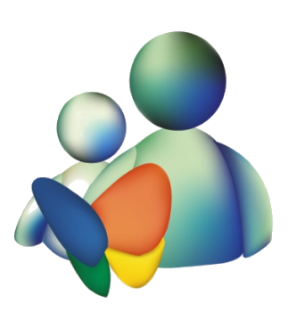

MENÚ DE JUEGOS
Este es el panel de control de juegos.
Ya tienes una sesión activa.
INGRESAR A LA SALA DE CHAT
EL AHORCADO
Tradicional juego del ahorcado.
Se revela la cantidad de letras de una palabra y el jugador tiene que adivinar una por una las letras hasta descubrir por completo la palabra.
MAYOR O MENOR
Juego de cartas en el que el jugador debe adivinar si la próxima carta será menor o mayor que la actual.
PREGUNTADOS
Juego de preguntas y respuestas organizado en seis categorías: Geografía, Ciencia, Historia, Deporte, Arte y Entretenimiento.
Reedición del clásico Carrera de Mente.